Visão geral e perfis
O sistema organiza o processo comercial em uma trilha única, com rastreabilidade por etapa, controle por perfil e histórico centralizado. A operação foi estruturada para refletir a realidade da equipe Uniseter, com separação entre vendedor, apoio interno, propostas, jurídico e administrador.
Perfis principais
- Vendedor: abre solicitações, negocia e acompanha os próprios negócios.
- Comercial interno: faz triagem e devoluções para ajuste.
- Propostas: elabora, gera número e finaliza a proposta.
- Jurídico: conduz contrato, cláusulas e assinatura.
- Administrador: controla usuários, permissões e listas.
Regras estruturais
- O número da proposta é obrigatório antes da finalização.
- O PDF final deve estar anexado antes do envio ao vendedor.
- Vendedores enxergam apenas os próprios negócios, inclusive no dashboard e no funil.
- O diário de negociação deve ser atualizado com contexto útil e data.
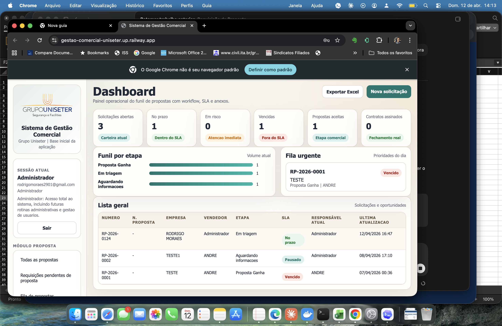
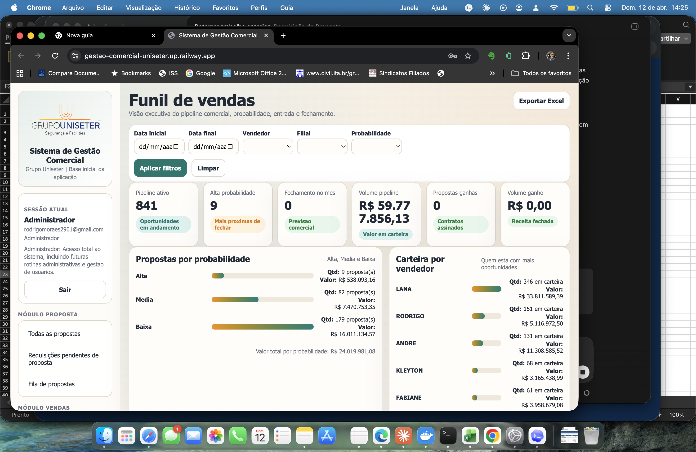
Fluxo completo
- Solicitação aberta pelo vendedor.
- Triagem interna e devolução, se houver pendência.
- Em Elaboração da Proposta.
- Geração do número da proposta.
- Proposta finalizada com PDF.
- Recebimento de Proposta pelo vendedor.
- Negociação com atualização de probabilidade e resumo.
- Proposta Ganha.
- Elaboração de contrato.
- Negociação de cláusulas.
- Contrato assinado.
Solicitações
Esse módulo recebe o pedido inicial do vendedor e organiza os dados do cliente, os serviços, os postos e os equipamentos por serviço. Ao salvar corretamente, a solicitação deve entrar em Em triagem.
Sequência recomendada
- Dados da solicitação.
- Dados do cliente.
- Contatos.
- Tipos de serviço.
- Benefícios.
- Postos por serviço.
- Equipamentos por serviço.
- Observações gerais e resumo.
Pontos de atenção
- Segurança e Vigilância representam a mesma linha operacional.
- No sábado, a operação considera apenas horário de entrada.
- O e-mail financeiro foi ajustado para e-mail de faturamento.
- O preenchimento por serviço melhora leitura e orçamento.
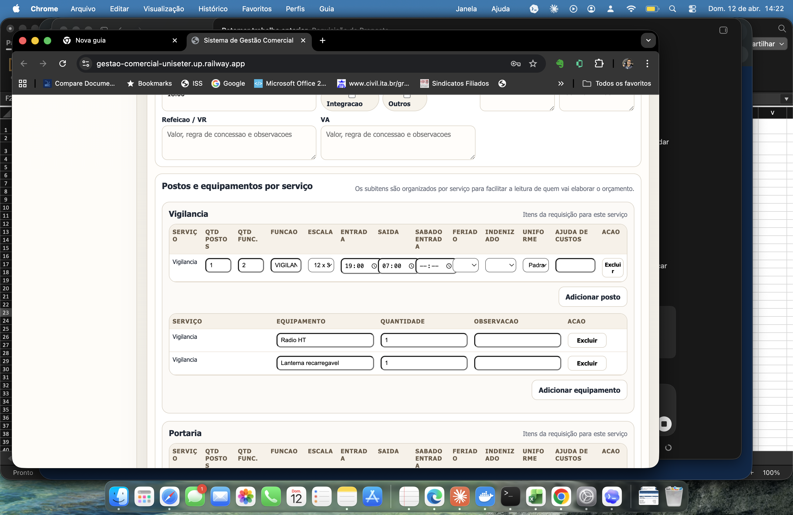
Propostas
O módulo de propostas centraliza triagem, devolução para correção, elaboração, geração do número e finalização da proposta. Ele é a ponte entre a solicitação estruturada e o material formal que será enviado ao vendedor.
Etapas cobertas
- Em triagem
- Aguardando informações
- Em Elaboração da Proposta
- Geração do número da proposta
- Proposta finalizada
Checklist interno
- Definir responsável pela triagem.
- Selecionar corretamente o campo Mover para etapa.
- Gerar o número da proposta antes da finalização.
- Anexar o PDF final antes do envio ao vendedor.
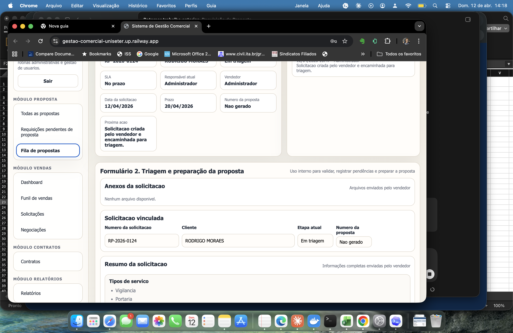
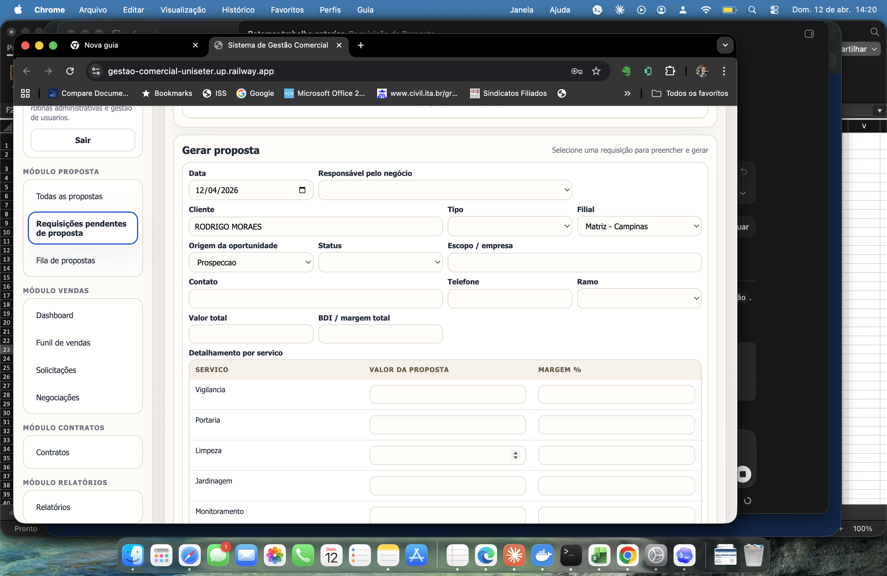
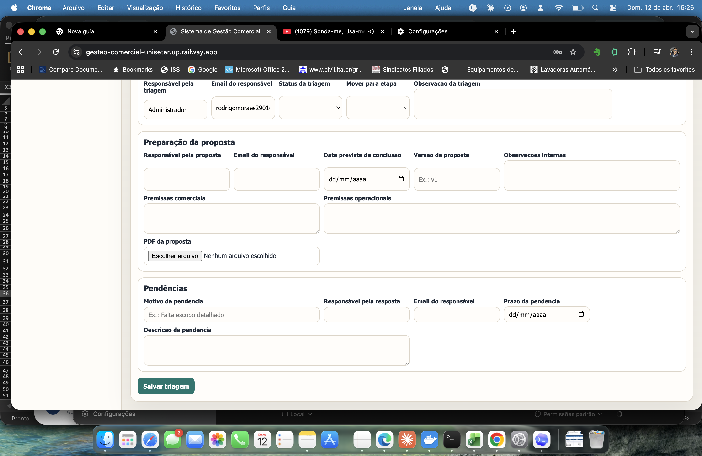
Negociações
Depois do envio ao vendedor, o sistema passa a registrar o comportamento comercial do negócio. Aqui entram a confirmação de recebimento, a probabilidade de fechamento, o resumo das tratativas e o avanço até Proposta Ganha.
Campos principais
- Status da negociação
- Último contato
- Próxima ação
- Fechamento previsto
- Probabilidade
- Motivo da probabilidade
- Resumo da negociação
Boas práticas
- Registrar o que foi discutido com o cliente.
- Indicar a próxima ação comercial.
- Atualizar a probabilidade sempre que o cenário mudar.
- Usar o resumo como diário de negociação por data.
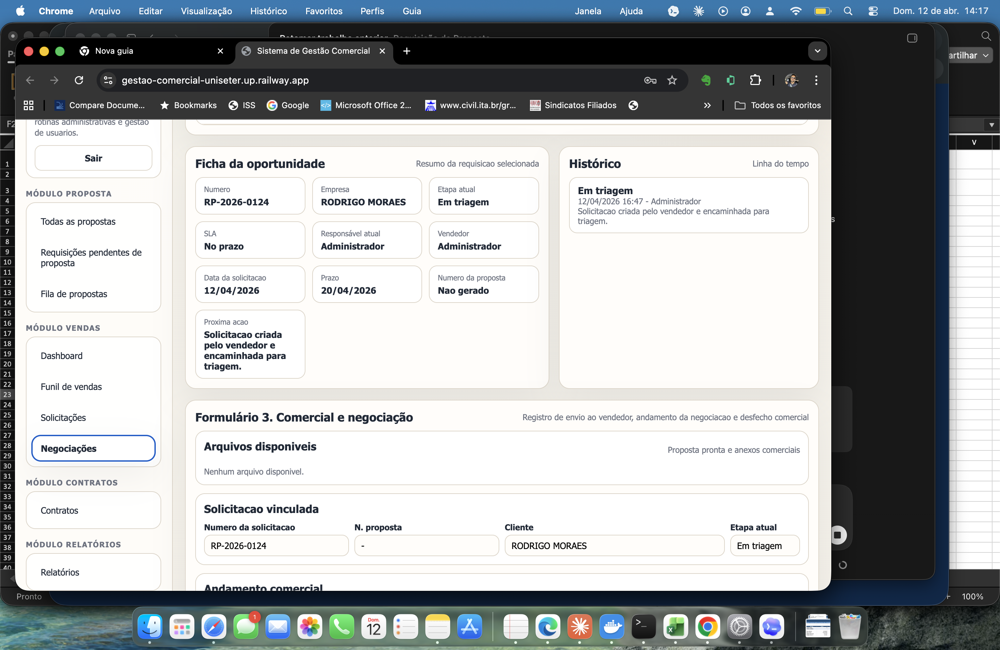
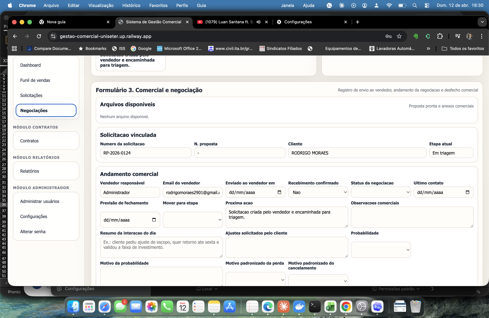
Contratos
Esse módulo formaliza o fechamento comercial. O jurídico acompanha o início da elaboração, a negociação de cláusulas, a documentação pendente e o encerramento com o contrato assinado.
Etapas contratuais
- Elaboração de contrato
- Negociação de cláusulas
- Contrato assinado
Cuidados importantes
- Registrar o responsável pelo contrato.
- Documentar cláusulas em discussão.
- Anexar o documento assinado na etapa final.
- Usar observações jurídicas de forma objetiva.
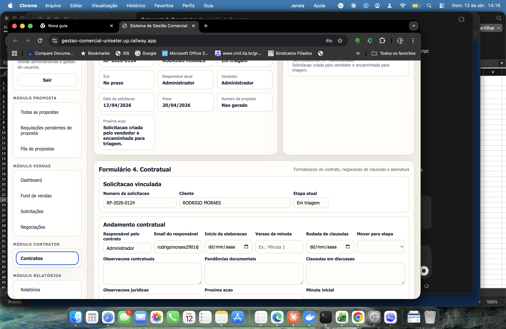
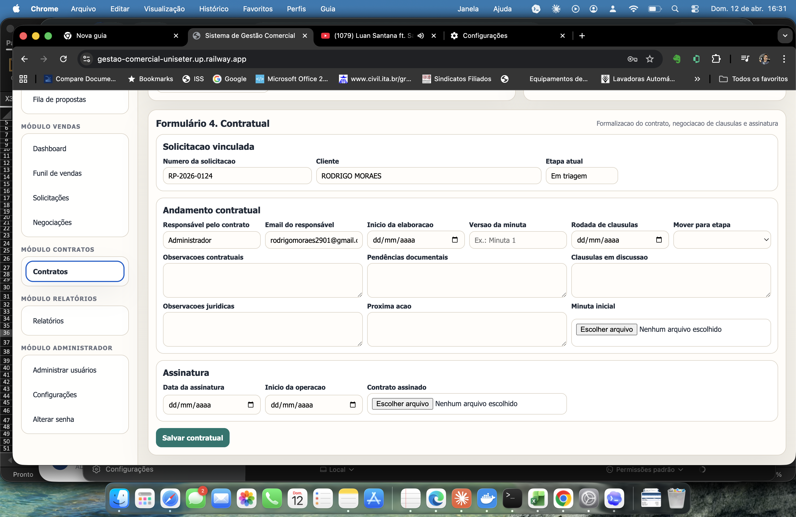
Dashboard, funil e administração
Além da operação, o sistema oferece visão gerencial da carteira e controles estruturais para manter o ambiente organizado e seguro.
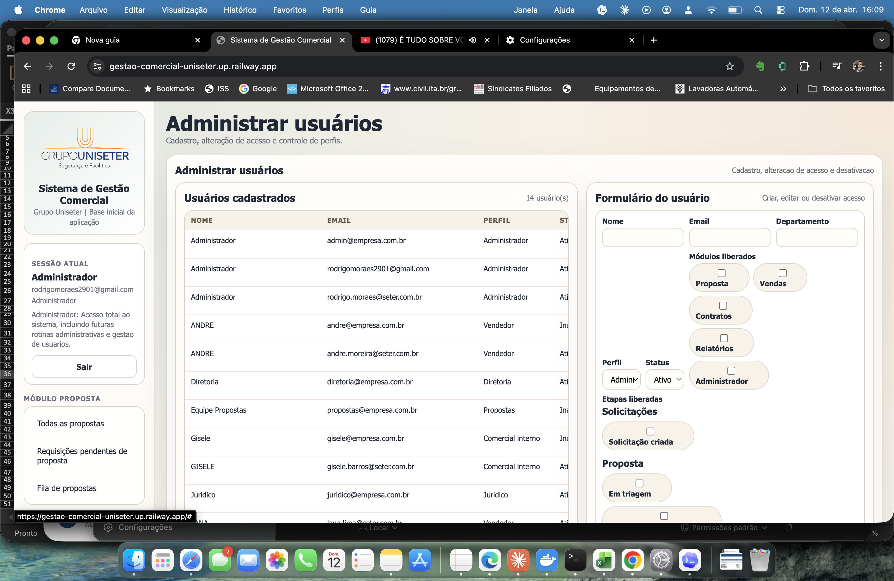
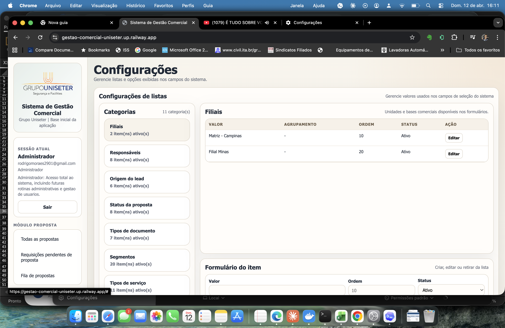
Glossário por módulo
Esta seção foi organizada para explicar, de forma prática, para que serve cada campo principal de cada aba. O foco aqui é o uso operacional, não apenas a descrição técnica.
Solicitações
- Prazo de entrega: define quando a área interna deve devolver a proposta ao comercial.
- Origem da oportunidade: informa de onde veio o lead e ajuda nas análises de captação.
- Email de faturamento: centraliza o contato financeiro do cliente para etapas futuras.
- Tipos de serviço: define o escopo principal do negócio e habilita a montagem operacional.
- Postos e equipamentos por serviço: detalha a operação por linha de serviço, facilitando orçamento e leitura técnica.
- Observações gerais: guarda contexto complementar importante para propostas e operação.
- Anexos iniciais: recebe materiais base enviados pelo cliente.
- Documentos técnicos do cliente: concentra arquivos que servem de apoio para cálculo e escopo.
Propostas
- Status da triagem: classifica o resultado da análise inicial da solicitação.
- Mover para etapa: determina para qual fase do fluxo a oportunidade será enviada.
- Observação da triagem: registra a justificativa da decisão tomada na análise.
- Responsável pela proposta: define quem assume a elaboração do material.
- Premissas comerciais: consolida regras comerciais que impactam a proposta.
- Premissas operacionais: registra bases técnicas e operacionais que sustentam o custo.
- PDF da proposta: anexa o documento final que será enviado ao vendedor.
- Motivo da pendência: descreve o que falta para a solicitação poder avançar.
Negociações
- Status da negociação: mostra o momento comercial atual do negócio.
- Último contato: registra quando houve a interação mais recente com o cliente.
- Previsão de fechamento: informa a expectativa comercial de conclusão.
- Próxima ação: define o próximo passo concreto do vendedor.
- Resumo da interação do dia: funciona como diário datado da negociação.
- Ajustes solicitados pelo cliente: reúne pedidos de mudança que podem voltar para propostas.
- Probabilidade: classifica a chance de fechamento e alimenta o funil.
- Motivo da probabilidade: justifica a classificação dada pelo vendedor.
- Anexo do aceite: armazena a evidência formal do aceite do cliente.
Contratos
- Responsável pelo contrato: define quem conduz a etapa jurídica.
- Início da elaboração: marca a data em que a minuta começou a ser tratada.
- Versão da minuta: controla revisões do documento contratual.
- Rodada de cláusulas: registra a data da negociação jurídica em andamento.
- Cláusulas em discussão: lista pontos sensíveis ainda em debate.
- Pendências documentais: mostra o que ainda falta para concluir a formalização.
- Minuta inicial: anexa o primeiro documento contratual base.
- Contrato assinado: armazena o arquivo final assinado que encerra o fluxo.
Administração
- Perfil: define o tipo de acesso do usuário.
- Módulos liberados: limita em quais áreas o usuário pode navegar.
- Etapas liberadas: controla em quais fases do workflow o usuário pode atuar.
- Status: ativa ou desativa o acesso sem apagar o histórico.
- Valor nas listas: representa o item exibido nos campos do sistema.
- Agrupamento: organiza listas por família ou categoria, quando necessário.
- Ordem: define a posição em que o item aparece para os usuários.
Dashboard e funil
- Data inicial e Data final: definem o período analisado no funil.
- Vendedor: filtra a carteira por responsável comercial.
- Filial: separa a análise por unidade comercial.
- Probabilidade: filtra oportunidades conforme chance de fechamento.
- Propostas por probabilidade: mostra distribuição de volume e valor por risco.
- Carteira por vendedor: mostra quem está com mais oportunidades e valor em carteira.
- Conversão por vendedor: compara entrada, aceite e fechamento por comercial.
Número da proposta
- Número / cliente / solicitação: campo de busca do histórico de propostas geradas.
- Status: classifica a situação do número gerado.
- Tipo: identifica a natureza do documento emitido.
- Valor total: registra o valor global da proposta.
- BDI / margem total: registra a margem consolidada da proposta.
- Detalhamento por serviço: quebra valores e margens por linha operacional.
- Arquivo da proposta: anexa o documento vinculado ao número.
Relatórios
- Data inicial e Data final: definem o período do relatório.
- Vendedor: filtra por responsável comercial.
- Etapa: separa registros pelo estágio do workflow.
- SLA: permite analisar prazo, risco e vencimento.
- Cliente / número: localiza um registro específico.
- Exportar Excel: gera a base para análise externa.
Alteração de senha
- Senha atual: confirma que o usuário é o titular do acesso.
- Nova senha: define a nova credencial.
- Confirmar nova senha: evita erro de digitação antes de salvar.
Regras críticas e boas práticas
Regras críticas
- O número da proposta é obrigatório antes da finalização.
- O PDF final deve estar anexo antes do envio ao vendedor.
- O vendedor deve visualizar apenas os próprios negócios.
- Dashboard e funil devem seguir a mesma regra de visibilidade.
- Contrato assinado encerra o fluxo.
Boas práticas
- Revisar o resumo antes de salvar a solicitação.
- Preencher listas e cadastros com padrão consistente.
- Alimentar o diário de negociação com frequência.
- Evitar retrabalho e duplicidade de registros.
- Manter as listas administrativas sempre atualizadas.